Metabolic modeling and analysis for bioprocess engineering
생물 시스템은 DNA 서열에 의해 구조와 기능이 암호화된다. 세포 내부는 대사, 조절, 신호전달 경로가 얽힌 매우 복잡한 네트워크이다. 이를 어떻게 이해할까? → Modeling.
모델은 시스템의 본질을 단순화하여 표현한 것이다. 시스템의 거동을 예측하기 위해 사용된다.
모델 종류로는 수학적/기계론적(Mechanistic) 모델과 통계적/경험적(Empirical) 모델 두 가지가 있다.
모델링 식의 타입에는 다음의 3가지가 있다.
Connectivity inference (연결만 확인)
Constraint-based (실현 가능한 해)
Mechanistic/kinetic (미분방정식 기반)
각 모든 단계의 시작은 네트워크 구축이다. 간단한 예시로 세포 대사를 살펴보자.
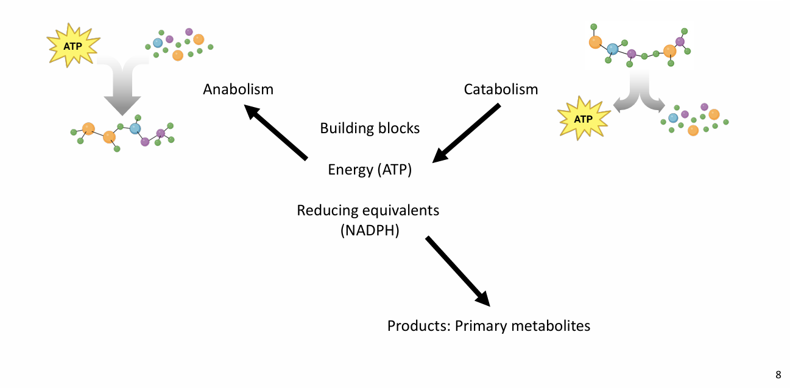
이건 catabolism( ATP 생산) 과 Anabolism (ATP 사용해서 에너지 생성)의 두 가지로 구성된다. 각 과정에서 생성물과 부산물을 알면 밸런스를 세울 수 있다.
Accumulation=In−Out+Generation−Consumption
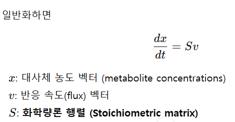
Stoichiometric Matrix S에 대해서 알아보자. 행(Row)은 각 대사체 물질들이고 열은 각 반응 (reactions)들이다.
복잡한 예제 1)
예를 들어 포도당이 들어왔을 때 TCA 회로를 거치는 것을 모델링해보자.
| -해당과정 (Glycolysis) R1: Glucose + 2 ADP + 2 Pi + 2 NAD⁺ → 2 Pyruvate + 2 ATP + 2 NADH + 2 H₂O -Pyruvate → Acetyl-CoA 변환 R2: Pyruvate + NAD⁺ + CoA → Acetyl-CoA + CO₂ + NADH -TCA 회로 (요약) R3: Acetyl-CoA + OAA → Citrate R4: Citrate → Isocitrate R5: Isocitrate + NAD⁺ → α-KG + CO₂ + NADH R6: α-KG + NAD⁺ + CoA → Succinyl-CoA + CO₂ + NADH R7: Succinyl-CoA + GDP + Pi → Succinate + GTP + CoA R8: Succinate + FAD → Fumarate + FADH₂ R9: Fumarate + H₂O → Malate R10: Malate + NAD⁺ → OAA + NADH |
표로 1열에 물질을, 행에 반응으로 없어지는 양을 표기하면 다음과 같다.
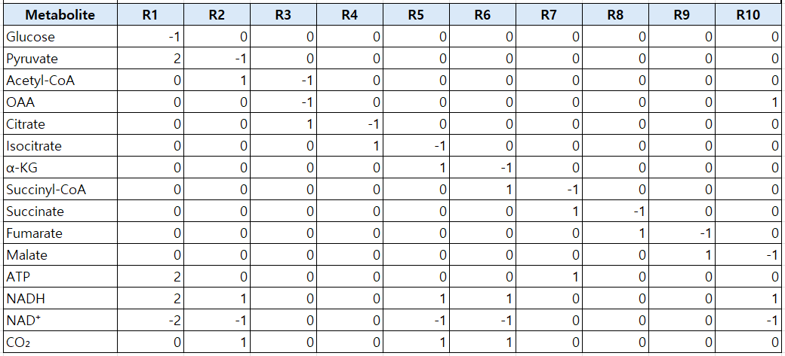
이제 글루코스가 1이 들어왔다고 가정해보자. 그러면 2의 피루브산이 만들어진다. 이때 R2 반응의 전환율이 90%라고 가정할 경우 실제 소모량은 1.8이다. 이를 토대로 다시 재구성해보면 다음과 같다.
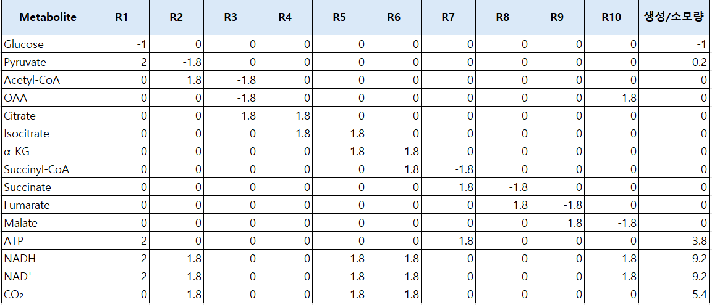
근데 이것을 다음처럼, 원래 표와 v에 대한표, 즉 S와 V로 따로 나타낼 것이다. 따라서 다음과 같다.
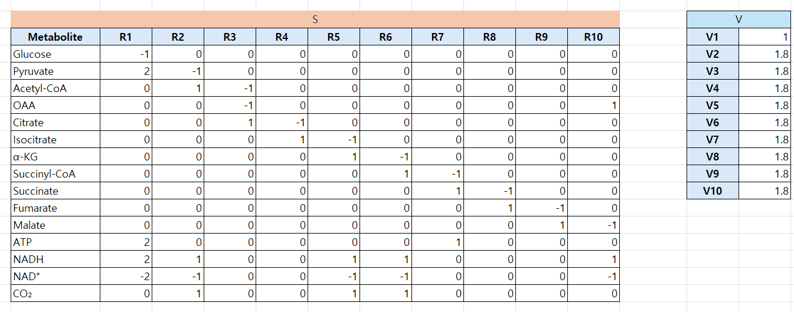
이제 이 둘을 곱해주면 다음 식이 완성된다.
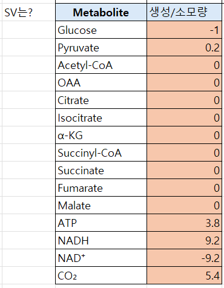
즉 S는 각 반응의 반응계수만 따로따로 적은 항(서로 맞춰줄 필요는 없음) 이고 v는 각 반응의 속도를 의미하며 둘이 곱해주면 최종생성/소모량이 나온다.
어려울 수도 있어 간단한 접근으로 다른 예시를 들어보면 다음과 같다.
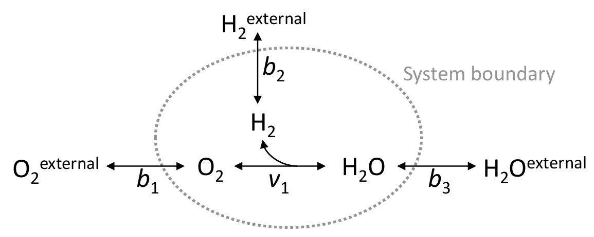
이런 간단한 물을 만드는 반응이 있을 때, S와 v는 각각 다음과 같다.
반응1: 외부 산소가 유입됨 O2 out = O2 in
반응2: O2 in + 2H2 in <=> 2H2O out
반응3: 외부 수소가 유입됨 H2 OUT <=> H2 IN
반응4: H2O in <=> H2O out
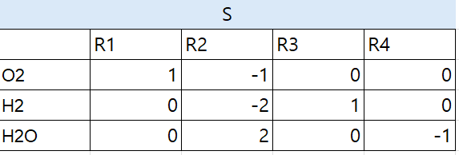
이제 v를 정할건데, 반응이 산소 3몰씩 반응하고 만약 시스템 내부의 축적이 없다면 다음과 같다.
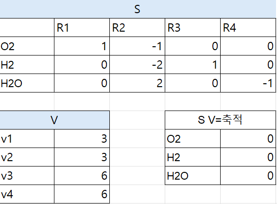
이를 Stationary analysis라고 한다. 정상상태에서 농도가 일정하다고 하고 플럭스(속도식)을 구하는 것이다. 이를 FBA라고 한다.
(만약 물이 나가지 않는다면 다음과 같다.)
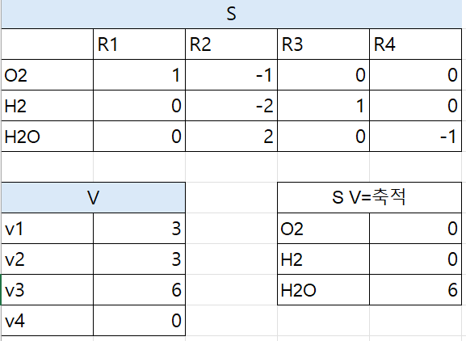
다음에 정상상태와 동적 모델의 비교를 나타내었다. 정상상태 가정은 동적 변화를 못 담는 한계가 있지만, 현실적으로는 가장 널리 쓰이고 앞으로도 계속 쓸 수밖에 없다. 그래서 metabolic modeling에서는 대부분 FBA(정상상태 기반)를 기본 도구로 삼고, 특별한 경우에만 kinetic model을 쓴다.
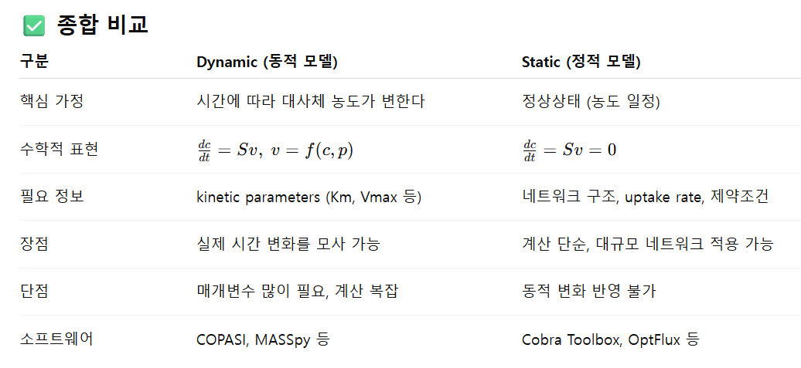
예제 2)
이제 간단한 static (정상상태) 예제를 풀어보자.
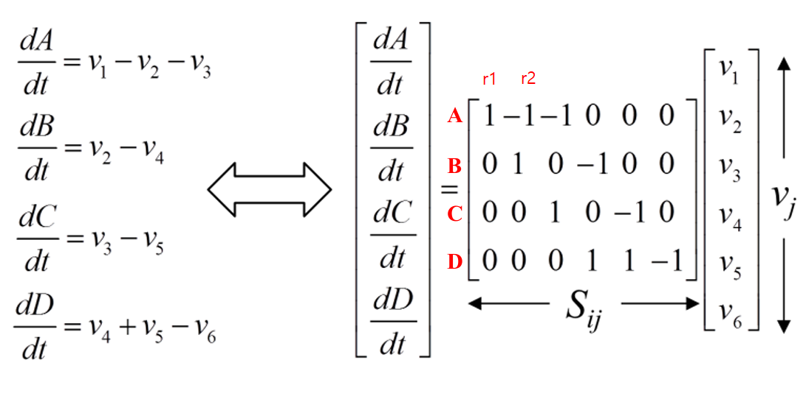
A,B,C,D가 6가지 반응을 통해 생성된다. 이때 양론계수는 S로 정해지고 반응속도 v는 실험적으로 측정해야 한다. 관계식을 세우면 위 사진과 같다.
여기서 문제는, 얼마나 많은 반응속도를 측정해야하는가? 이다. 반응이 r1~6까지 있는데 다 측정하면 좋겠지만, 일부만 측정될 수도 있다.
이때 v1 v2 v3 v4 v5 v6 는 미지수이고 각 줄(반응물 수)은 반응식이다. 미지수-반응식=2개이므로 2개의 미지수가 더 알려지면 이 식은 정의가 된다.
만약 v1=10이고 v3=4일때 문제를 풀어보도록하자.
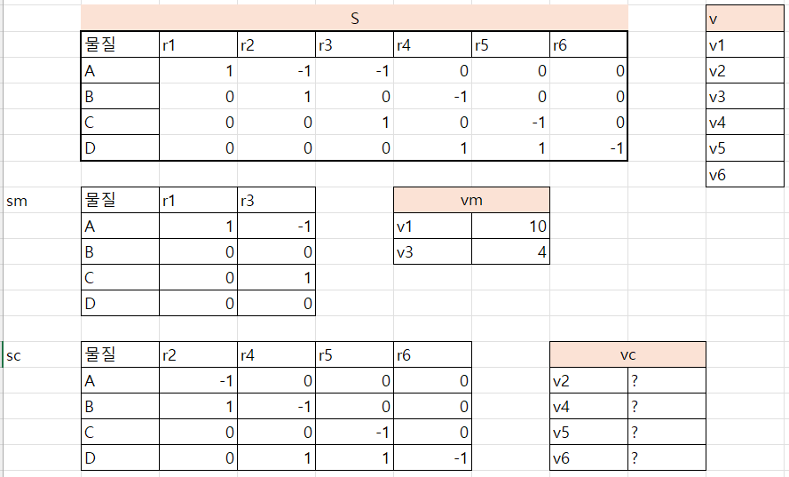
전체 표 S와 V가 있고 측정이 된 Vm에 해당하는 SM, 측정이 안된 SC와 vc가 있다. 우리가 원하는 것은 vc이다.
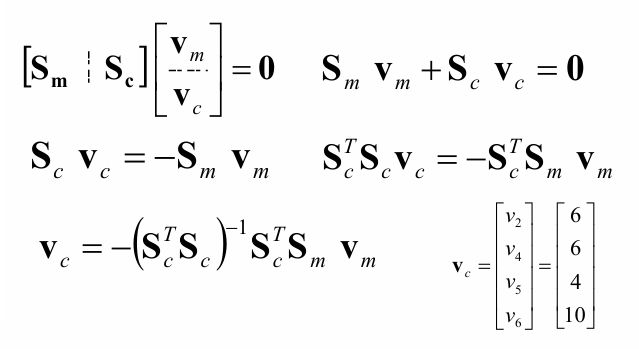
SV=[SMSC] [VM VC] = SmVm+ScVc =0이고
ScVc= (-SmVm)
전치를 걸어주고 역행렬을 곱해주면 Vc를 구할 수 있다. 이 공식은 외워야한다. 이제 이거를 엑셀을 이용해서 구할 것이다.
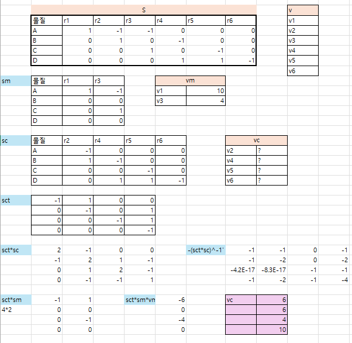
그냥 vc 식을 구해서 적어주면 된다.
이러한 모델링을 하는 방법을 알아보자.
1. 경계를 정의한다.
2. 대사 네트워크를 세우고 화학량론 행렬 S로 표현하기
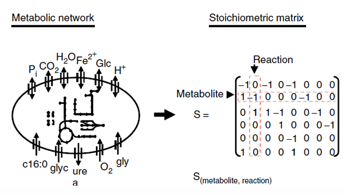
행(Row) = 대사체 (metabolites)
열(Column) = 반응 (reactions)
이때 해가 무수히 많으면 ( v1, v2 등이 더 많으면 최적화 문제로 바꿔야 한다.)
Linear algebra vs Linear programming:
-Linear algebra (선형대수): 방정식 개수 ≥ 미지수 개수 → 해가 하나로 정해지는 determined system.
-Linear programming (선형계획법): 방정식 개수 < 미지수 개수 → underdetermined system → 해가 무수히 많음.
Optimization (최적화):
그 중 어떤 해가 실제 세포가 선택하는 해인가?를 정하기 위해 목적함수(Objective function)를 둔다.
목적: 더 나은 해, 더 이익, 최고의 해, 적은 비용으로 더 많은 성과
즉, 주어진 제약 조건 안에서 의사결정 변수(decision variables)를 조정해 목적함수를 최적화.
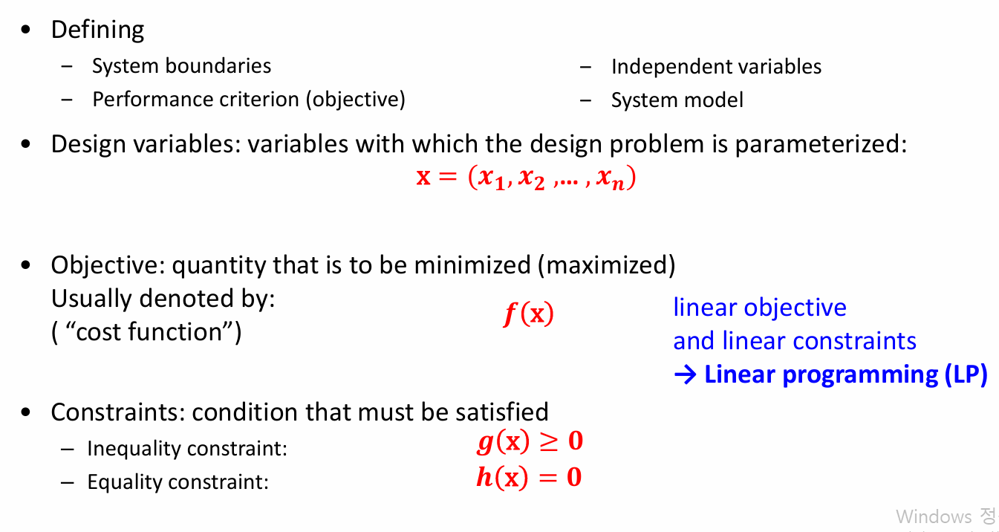
최적화 문제를 수학적으로 정의하는 방법
1. Defining
System boundaries (시스템 경계 정의)
Performance criterion (목표 정의: growth, ATP, 산물 생산 등)
Independent variables (의사결정 변수)
System model (S 행렬, 제약조건 등)
2.Design variables (설계 변수)
우리가 바꿀 수 있는 변수들 (여기서는 flux)
3. Objective (목적 함수)
최소화/최대화할 양
보통 f(x)로 표현 (예: 세포 성장률, ATP 생산량)
“Cost function”이라고도 부름
4.Constraints (제약조건)
-Inequality constraint (부등식 제약): g(x)≥0
(예: flux는 음수가 될 수 없다, 기질 흡수 속도는 최대 -10 mmol/h)
-Equality constraint (등식 제약): h(x)=0
(예: 질량수지 Sv=0)
Linear objective + linear constraints → Linear Programming (LP)
👉 메시지: FBA 같은 분석은 결국 “Linear Programming 문제”로 풀 수 있다.